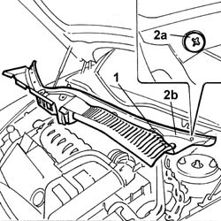

7055A18 Winsdcreen base TRIM - R.R.
- Path
- Procedures > 70 FITTINGS > 7055 MOULDINGS ON PROTECTIONS > 7055A EXTERIOR MOULDINGS > 7055A18 Winsdcreen base TRIM - R.R.
- Kind
- repair procedure (removal / refitting; the operation number is the code)
- Applies to
- all engines; all production periods
- Interactive page
- https://sloeber94.github.io/elrnDB-lThss/en/#/80698
Applies to: all engines; all production periods
 Removing
Removing
 Refitting
RefittingSee in Op. 7040D50 ENGINE COMPARTMENT UPPER SOUND INSULATION SHIELD - R.R.
See in Op. 5050B34 WINDSCREEN WIPER ARM(S) for front windscreen wiper complete with blade
1. Undo the bolts fixing the trim.
2. Rotate the outer bolts (2a) and remove the trim (2b).

Applies to: all engines; all production periods
Refitting
Removing- Place the trim in position and secure it using the bolts.
See in Op. 5050B34 WINDSCREEN WIPER ARM(S) for front windscreen wiper complete with blade
-
See in Op. 7040D50 ENGINE COMPARTMENT UPPER SOUND INSULATION SHIELD - R.R.
Topics linked from this page (2)
- 5050B34 WINDSCREEN WIPER ARM(S) for front windscreen wiper complete with blade
- 7040D50 ENGINE COMPARTMENT UPPER SOUND INSULATION SHIELD - R.R.
Topics that link to this page (11)
- 1004B17 POWER UNIT with automatic transmission, complete with support frame, front suspension- R.R. for versions with air conditioning
- 1004B18 POWER UNIT with manual gearbox, with front suspension subframe - R.R.
- 1020D39 Flywheel side OIL SEAL - Replace for versions with automatic transmission
- 1024B20 ENGINE FLYWHEEL - R&R for versions with automatic transmission
- 4130B10 POWER ASSISTED STEERING FLUID RESERVOIR - R.R. - Includes bleeding air
- 4130B34 Supply PIPE from fluid RESERVOIR to POWER ASSISTED STEERING PUMP - R.R. Includes bleeding air
- 4130B82 Rubber PIPE from rigid return pipe to fluid reservoir - Includes bleeding air
- 4410D10 Front suspension FRAME - R.R.
- 5050B42 Front windscreen wiper MOTOR - R.R.
- 5505C26 ENGINE COMPARTMENT built in wiring - R.R.
- 7035A18 Rearscreen WINDOW GLASS (bonded type) - R.R. for Replacement - Includes cleaning housing in bodyshell